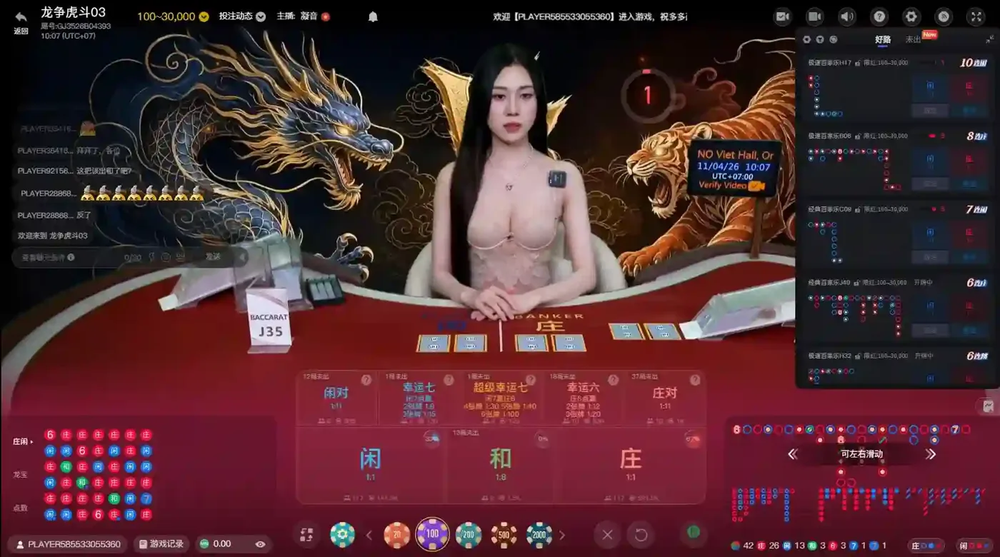

多寶真人共有 19 種遊戲，是我實測的品牌中遊戲種類最多的品牌，百家樂就細分 5 種玩法，另有三公、牛牛等卡牌遊戲。缺點是畫面偏暗、荷官互動少、介面以簡體中文為主；官網的免費試玩按鈕會導向第三方網站。社群上的心得分享不多。
| 官方試玩入口 | 無（官網按鈕導向第三方網站） |
|---|---|
| 遊戲種類 | 19 種 |
| 最大優點 | 遊戲種類最多 |
| 主要限制 | 畫面偏暗、互動少 |
| 社群評價 | 心得分享不多 |
| 總評分 | 4 / 5 |
關於 多寶真人
依多寶官方網站，DB 多寶真人主打高清直播與荷官即時互動，提供經典百家樂、區塊鏈百家樂與多台下注等玩法，並提供平台商串接服務。
- 經典百家樂每局 20 秒，官網標示有 28 種下注玩法
- 提供區塊鏈百家樂與多台下注百家樂
- 直播間可聊天、送禮，並設有排行榜
- 支援繁中、簡中、英文、越南文、泰文
- 支援 iOS、Android、Windows、HTML5
資訊來源：DB 多寶真人官方網站、本人試玩遊戲介面截圖
多寶真人試玩入口
無。多寶真人目前沒有官方試玩入口，必須透過提供免費體驗金的娛樂城才能進入牌桌。多寶官網雖然有「免費試玩」按鈕，但會導向第三方網站，並非多寶自己的試玩入口。
試玩前請先了解
- 台灣目前沒有合法的線上娛樂城。在台灣參與網路賭博，可能觸犯刑法第 266 條。
- 避開要求私下聯繫、來路不明的網站，註冊前先閱讀平台條款，詳見假網站辨識。
- 提供試玩之平台，僅作為體驗使用，無法直接兌換成現金。
多寶真人有哪些遊戲？
多寶真人共有 19 種遊戲，是本站最多的品牌，「遊戲種類」評為 5 分。百家樂細分為極速、經典、電投、共咪、閃電 5 種玩法，另有 21 點、輪盤、骰寶、龍虎、德州撲克、牛牛、炸金花、三公等卡牌與桌上遊戲。
極速百家樂經典百家樂電投百家樂共咪百家樂閃電百家樂21 點輪盤骰寶幸運輪盤龍虎德州撲克牛牛炸金花番攤三公色碟安達巴哈溫州牌九印度炸金花

依試玩畫面整理（2026 年 11 月），遊戲選單可能隨遊戲商更新而變動。
百家樂玩法與遊戲數比較
多寶的強項是遊戲數量，以下比較各品牌的遊戲組成，說明欄為我實測心得。
| 品牌 | 遊戲種類 | 實測心得 |
|---|---|---|
| 多寶真人 | 19 種（5 / 5） | 多寶真人共有 19 種遊戲，是我實測中最多的品牌，「遊戲種類」評為 5 分。百家樂細分為極速、經典、電投、共咪、閃電 5 種玩法，另有 21 點、輪盤、骰寶、龍虎、德州撲克、牛牛、炸金花、三公等卡牌與桌上遊戲。 |
| 歐博真人 | 7 種（4 / 5） | 歐博真人的選單包含百家樂、番攤、色碟、無限二十一點、推筒子、AB 捕魚、AB 電子，扣除性感廳、超級多檯等廳別後共 7 種遊戲，「遊戲種類」評為 4 分。推筒子在選單上標示為新遊戲，平台持續開發新玩法。 |
| SA 真人 | 7 種（4 / 5） | SA 真人的選單有百家樂、輪盤、骰子、龍虎、二十一點、博丁、色碟，共 7 種遊戲，「遊戲種類」評為 4 分。其中博丁是較少見的玩法，適合想嘗試百家樂以外遊戲的玩家。 |
| WM 真人 | 4 種（3 / 5） | WM 真人的選單有百家樂、色碟、龍虎、骰寶，以及「其他」分類，扣除多台模式後共 4 種遊戲，「遊戲種類」評為 3 分。另有多桌模式，可以同時查看多張牌桌。 |
多寶真人實測心得
多寶真人的遊戲數量是我實測中最多的，百家樂細分為極速、經典、電投、共咪、閃電 5 種，另有三公、牛牛、炸金花等卡牌遊戲，也依地區分為多個遊戲廳。我使用個人手機網路試玩，沒有延遲或斷線。但畫面偏暗；荷官以東南亞語言為主，單純發牌，沒有互動實感；介面以簡體中文為主。
優點
- 共 19 種遊戲，選擇最多
- 百家樂細分 5 種玩法，另有好路桌台
缺點
- 畫面偏暗
- 荷官互動少
- 介面以簡體中文為主
多寶真人玩家留言
以下是訪客分享的多寶真人試玩心得，與首頁「快速查看」視窗中的留言相同。玩家留言僅代表個人經驗，未經本站驗證。
留言載入中…
資料來源
- 本人試玩遊戲介面截圖（2026 年 11 月）
- DB 多寶真人官方網站
- 刑法第 266 條條文（司法院裁判書附錄）
- 1925 安心專線（衛生福利部）